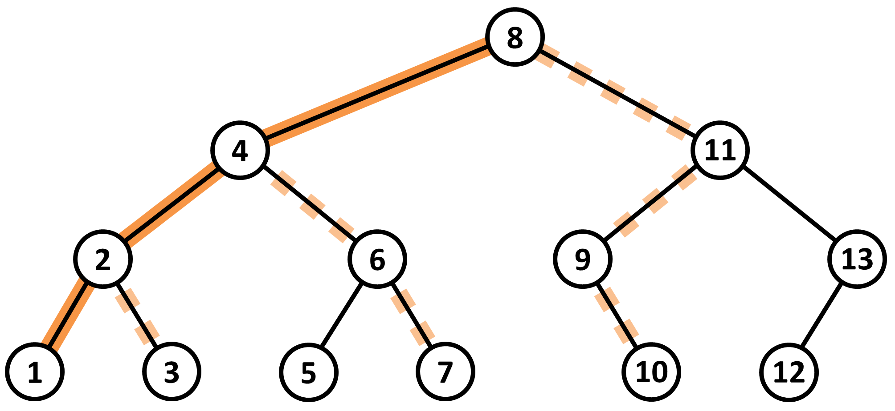

Výstavba sítě železničních tratí
Hlavní (krajské) město horského kraje je propojeno s ostatními městy sítí silnic. Každá silnice vede údolím a spojuje dvě města, mimo města se silnice nekříží.
Zároveň platí, že topologie měst a silnic odpovídá binárnímu stromu, ve kterém je hlavní město kořenem. Znamená to, mimo jiné, že z libovolného města
se lze do hlavního města dostat právě po jedné trase, pokud po každé použité silnici projedeme pouze jednou.
K zajištění plynulejšího spojení s hlavním městem se kraj rozhodne vybudovat síť železničních tratí.
Horský terén umožňuje stavět tratě jen poblíž existujících silnic, jeden železniční úsek tak propojí vždy dvě města spojená silnicí.
S přihlédnutím k dostupným finančním prostředkům je pro maximální efektivitu železniční dopravy požadováno následující řešení.
Bude vybudovaná právě jedna rychlotrať, která bude začínat v hlavním městě a povede přes několik na sebe navazujících železničních úseků
(z hlavního města tak vede právě jeden úsek rychlotrati; z každého další města rychlotrati, s výjimkou koncového, vedou dva rychlotraťové úseky).
Dále, z každého města ležícího na rychlotrati může být vybudovaná obyčejná trať z dalších po sobě navazujících železničních úseků, které ovšem již nespojují
města ležící na rychlotrati (stejně jako rychlotrať představuje i obyčejná trať ve stromové topologii cestu).
Cílem návrhu sítě železničních tratí je maximalizovat počet měst, pro která bude existovat spojení s hlavním městem po železnici (za použití rychlotrati a/nebo jedné
obyčejné trati).
Úloha
Pro danou topologii měst a silnic nalezněte plán na vybudování sítě železničních tratí dle daných požadavků, která propojí maximální počet měst s hlavním městem.
|

Obrázek 1. Příklad optimální sítě železničních tratí, která propojuje 10 měst z celkového počtu 13. Města odpovídají uzlům daného stromu, silnice jsou jeho hrany. Hlavní město je kořen s identifikátorem 8. Rychlotrať je znázorněna oranžovým pozadím, celkem 3 obyčejné tratě pak přerušovaným světle oranžovým pozadím. |
Vstup
První řádek vstupu obsahuje celé číslo N reprezentující počet měst.
Druhý řádek vstupu obsahuje N různých celých čísel od 1 do N oddělených mezerami.
Každé z těchto čísel je identifikátorem jednoho města, přičemž čísla jsou na vstupu zapsaná v pořadí preorder
(s ohledem na stromovou topologii měst a silnic) a zároveň platí, že každý identifikátor odpovídá pořadovému číslu daného města v uspořádání inorder.
Reprezentovaný binární strom nemusí být úplný, vnitřní uzly mohou mít pouze jednoho potomka (levého, nebo pravého).
Platí 2 ≤ N ≤ 4 × 106.
Výstup
Výstup obsahuje jeden textový řádek s celým číslem M, jež odpovídá maximálnímu počtu měst, která mohou být součástí zamýšlené sítě železničních tratí.
Příklad 1
Vstup7 3 1 2 6 4 5 7Výstup
7
Příklad 2
Vstup13 8 4 2 1 3 6 5 7 11 9 10 13 12Výstup
10Data a řešení Příkladu 2 můžeme vidět na Obrázku 1.
Veřejná data
Veřejná data k úloze jsou k dispozici. Veřejná data jsou uložena také v odevzdávacím systému a při
každém odevzdání/spuštění úlohy dostává řešitel kompletní výstup na stdout a stderr ze svého programu
pro každý soubor veřejných dat.
Veřejná data